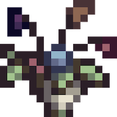
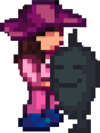

Romance Stages
In Stardew Valley, romance can be divided within stages that offer different interactions. This page will go through each stage and the possible alternative routes you can have.
Dating
To start dating someone, you need the maximum hearts (8) filled. Afterwards, Pierre will start selling the Bouquet which can be gifted to initiate the dating stage. How he knows you need one is beyond anyone but he does sell them for cheap which makes it accessible at any part of the game.
Note that you can buy more than one; however, you can only give one to a marriage candidate who has maximum hearts. Once you give someone bouquet, you will unlock 2 more possible hearts and their status within the menu's social tab will change to "Girlfriend" or "Boyfriend."
Breaking Up
For some reason, you decided that this person may not be the one. That's okay! By putting a Bouquet in a furnace, it will become a Wilted Bouquet. Giving this to your partner will cause a break up and you will lose 5 hearts with them.
Cheating
It is possible to give a Bouquet to multiple marriage candidates. There is no real consequence (other than questionable moral implications) until you have given a bouquet to every bachelor OR bachelorette and seeing their 10-heart event. By doing so, you unlock the Group Heart Event scene. The consequences from seeing this scene are quite light (compared to the deplorable actions you have taken) and thus not worth spoiling. If you are considering this... then good job! This route takes a lot of effort to reach.
Engagement
To be engaged to your partner, you need the maximum hearts (10) filled and an upgraded house (atleast once). Afterwards. Lewis will give some information about the Mermaid Pendant and engagement traditions of the region. The Mermaid Pendant can be bought from the Old Mariner, who resides by the trees of the tidal pools area at the Beach. He will only show up on rainy days between the seasons of Spring and Fall; however, he can appear in winter after using a Rain Totem. By gifting the Mermaid Pendant to your partner, you have successfully proposed to them! Congratulations!
Wedding Day
On the calendar, there will be a Mermaid Pendant icon to signify what day the wedding will take place. It should normally be on the fourth day after the proposal unless there is a special event going on during the same day, in which the wedding will be postponed until the next available day. Wedding days will always start with the ceremony and will always be sunny.
Once the wedding is over, the day will begin as normal at 6 in the morning. Your spouse will also now appear in your home and there will now be an additional 4 more possible hearts with them.
Marriage
When your spouse moves in, they will have their own room extension in the house and a small outdoor area near the house.
Your spouse can help take some burden off your shoulders by doing some chores around the farm such as feeding animals or repairing fences. Admittedly, by this stage of the game, there are more effective methods of getting these done so it is not the most helpful... Spouses can also change the wallpaper or flooring of rooms and place furniture. Other than being a slight inconvenience, it is quite hilarious to see what they might do. All these interactions require your spouse to be happy, which can be done how you regularly increase friendship points, with the addition of kissing. Kissing can also remove exhaustion if you haven't kissed them that day yet.
Once reaching 12.5 hearts (3125 friendship points), your spouse will gift you a Stardrop.
It is possible to make your spouse jealous if you give a marriage candidate (of the same gender as your spouse) who had already recieved a bouquet from you, a gift. The exception is if the gift is on their birthday or is given for an event or quest. There is only a chance of it happening, though you will lose 30 friendship points if they do.
Children
Useless. Don't have them. If you really do want them for the "roleplay" then all you need is a nursery which is available after a certain house upgrade. After, your spouse will randomly ask if you would want to have/adopt a child. PLEASE note that children do not grow past being a toddler. There is no benefit in having a child in Stardew, though you can build up friendship with them.
If you decided you do not want kids anymore, visit the Witch Hut (which is a late-game area) to offer a Prismatic Shard in exchange of turning your children into doves. By doing so, your children will be erased from your save but remnants of their existence will haunt your game.
Divorce
Were they not the one? That's okay! In the Mayor's Manor, there is a small book which gives the option to divorce your partner for 50,000 G. It can be cancelled before the end of the day, or before 10 pm if you are not good enough friends with Lewis.
Once divorced, the spouse will move out to their original home and their room and outdoor area will be gone. Anything placed within these area will be automatically placed inside a chest inside your house. Your relationship with your ex will go back to 0 friendship points and their status in the menu's social tab will be "Ex."
This does not affect any outside villagers. However, your ex will not talk positively towards you and will not accept any gifts. They will not attend any future weddings for obvious reasons.
To completely reset your relationship, visit the Witch's Hut (late game area) to erase all ex-spouses' (if you have more than one, you heartbreaker) memories for 30,000 G. Do note that any heart events seen previously will not appear again.